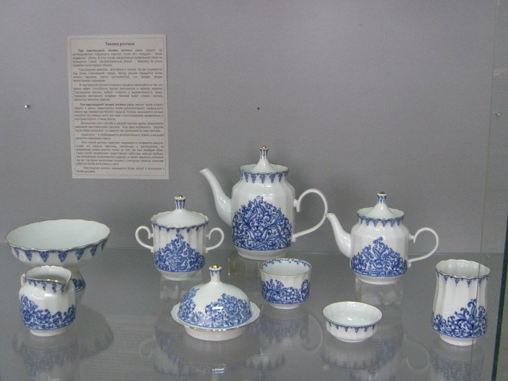

С. Лобовиков. Иллюзия объема
29 декабря в краеведческом музее начинает работу выставка уникальных стереофотографий Сергея Лобовикова из фондов Вятского художественного музея имени В. М. и А. М. Васнецовых.
Выставка стереофотографий - единственно возможная форма показа творческого наследия Сергея Александровича Лобовикова (1870-1941 гг.), русского фотохудожника с мировым именем.
Он родился в селе Белая Глазовского уезда Вятской губернии в семье дьякона. Образование его закончилось четырьмя годами обучения в сельской школе и в духовном училище. Рано осиротев, он в 14 лет был отправлен в губернский город Вятку, где и получил начальные сведения по фотоделу у вятского купца и фотографа Петра Григорьевича Тихонова.
В 1894 году Лобовиков, взяв в аренду небольшое помещение и фототехнику, открывает в Вятке собственное маленькое ателье. С 1899 года начинается деятельность С. А. Лобовикова как фотохудожника.
В 1900 году он с познавательной целью едет в Западную Европу, посещает Германию, Бельгию, Францию, Австрию. За свои работы, представленные на Всемирной выставке в Париже, по теме: «Крестьянский быт и труд крестьянина в России» получает бронзовую медаль. Последующее участие в международных выставках приносит С. А. Лобовикову новые признания и награды.
Сергей Лобовиков пользовался аппаратом французской фирмы - вераскопом Жюля Ришара. Это был, наверное, самый совершенный стереофотоаппарат, им можно было не только снимать, но и просматривать фотографии. К сожалению, эта технология не применима к массовому просмотру. Поэтому сотрудники Вятского музея оцифровали все стереонегативы и преобразовали электронные изображения в анаглифы.
На выставке «Иллюзия объёма» представлено 37 стереофотографий. При помощи анаглифных очков посетители смогут ознакомиться с сюжетами, запечатленными Лобовиковым в 1900-1932 годах. Одна группа снимков относится к первой поездке молодого фотографа в Европу в 1900 году на Всемирную выставку в Париже. Другая группа стереоснимков относится к поездкам фотографа по России, которые до революции он совершал ежегодно. Огромный интерес вызывают виды старой Вологды, Ярославля. Много занимательных сюжетов нашёл Сергей Александрович в Петербурге, вероятно, зимой 1902 года.
Отдельным блоком можно выделить снимки села Белая (Бельское, Бельско-Богородское) Глазовского уезда Вятской губернии, где родился фотограф. Не менее интенсивно С. А. Лобовиков использовал возможности вераскопа в Вятке. Большой интерес вызывают виды города, представленные на выставке. На них можно видеть давно утраченные здания и храмы. Некоторые участки городской застройки сохранились до наших дней, но время значительно изменило их облик.
Все стереоснимки С. А. Лобовиков создавал только для личных целей: развлечения семьи и как напоминание о важных событиях, поездках. Они передают оптическую иллюзию объема, пространства и глубины, но вдохнуть в иллюзию жизнь может только мастер.
Выставка будет работать по 27 февраля.
Мир сказок

В преддверии празднования Нового года 4 декабря в Прокопьевском краеведческом музее открылась выставка "Мир сказок».
В экспозиции представлены новогодние открытки 1970-х - 1980-х гг., ёлочные игрушки в виде сказочных персонажей, которые воссоздают сюжеты русских и зарубежных сказок, а также главные персонажи праздника - Дед Мороз, Снегурочка, Снеговик.
Новый год - один из любимых праздников детей и взрослых, связанный с приятными хлопотами и ожиданием чуда. На выставке посетители смогут узнать о традиции празднования Нового года в России, об истории возникновения ёлочных игрушек и их создании.
Дополняют выставку кадры из российских детских мультфильмов, без которых невозможно представить новогодние каникулы: "38 попугаев", "Дед Мороз и лето", "Чиполлино" и фотографии актёров, подаривших им свои голоса.
Выставка рассчитана на разновозрастную аудиторию. Для взрослых это повод вспомнить детские годы, а для детей - узнать много интересного!
Первый космический проходчик
24 ноября открылась выставка «Первый космический проходчик», посвященная космонавту Алексею Леонову, совершившему первый в истории человечества выход в открытый космос, а также его приезду в город Прокопьевск в ноябре 1965 года.
В экспозиции представлены спецодежда, в которой космонавт спускался в забой шахты № 3-3-бис, фотодокументы, рассказывающие о посещении нашего города космонавтом, газетные публикации, вышедшие в марте 1965 года, издания о первом отряде советских космонавтов, о космическом сотрудничестве СССР и США, значки из серий «Интеркосмос», «Первые космические аппараты», «Международное сотрудничество в космосе» и другие предметы.
Также на выставке можно увидеть книги, написанные А. А. Леоновым, которые предоставлены городской центральной библиотекой.
Всего на выставке представлено около 60 предметов.
Хранители традиций)

27 октября в краеведческом музее открылась выставка «Хранители традиции», посвященная ныне закрытым предприятиям нашего города – фарфоровому заводу и табачной фабрике. Сейчас, когда эти организации прекратили свое существование, их изделия являются музейной редкостью.
На выставке представлена фарфоровая продукция от самых простых форм, таких как столовая посуда, до элитных художественных изделий. Экспозиция демонстрирует изысканные изделия в декоративном оформлении.
Так, кофейный сервиз «Шахматный» В. А. Перуновой отличается утонченной формой, а чайный гарнитур «Теремок» Н. Д. Володькиной напоминает архитектурные объекты.
Большой интерес представляет сувенирная продукция анималистического жанра, например, изделия «Олень», «Соболь на ветке», «Заяц» и другие. В представленной коллекции есть и редкие предметы. К примеру, первое изделие завода, датированное 25 апреля 1973 года, а также пробные керамические изделия.
hrВ экспозиции представлены некоторые образцы продукции Прокопьевской табачной фабрики – сигареты марок «Прима», «Беломорканал» и папиросы «Огонек».
Уникальным экспонатом на выставке является брикет махорки, датированный 1943 годом.
Назад